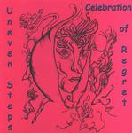

| Artist: | Uneven Steps |
| Title: | Celebration Of Regret |
| Label: | Step And A Half Multimedia |
| Length(s): | 34 minutes |
| Year(s) of release: | 2001 |
| Month of review: | [07/2001] |
| 1) | Conductor's Wife | 4.20 |
| 2) | Spare Me The Burden Of Your Cross | 1.50 |
| 3) | Empty Room | 4.12 |
| 4) | Celebration Of Regret | 4.27 |
| 5) | Mikayla | 6.02 |
| 6) | Unfinished Conversation | 2.44 |
| 7) | Post Mortem Apology | 2.55 |
| 8) | Postcard From The Depths Of Shame | 3.45 |
| 9) | The Mirror | 4.02 |
The vocals on Celebration Of Regret seem to be a bit unbalanced and not very melodic either. For the rest the song is actually quite melodic and proggy (this however is not showcased by the drummer).
Mikayla is more or less underground rock with plenty of keyboards this time, but the vocals continue to give the impression that they should have recorded or sung better. They sound sloppy. Riff rock on Unfinished Conversation. The song has a driven thing, something akin to The Wipers even. Again quite a bit of keyboards and the guitar at the end reminds me of No More Heroes by The Stranglers.
Post Mortem Apology has a Zappa feel, but sounds a bit simple again. After a melodic opening on Postcard From the Depths Of Shame, the song unfortunately turns out to be too uneventful. The same holds for the ballad The Mirror which has little going for it. I was reminded a bit of Bevis Frond when he is in a songwriting mood (but Bevis much to be preferred).